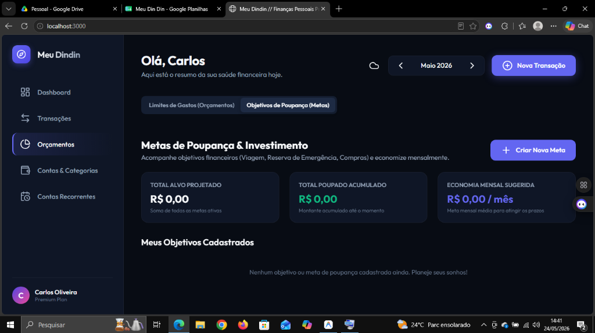
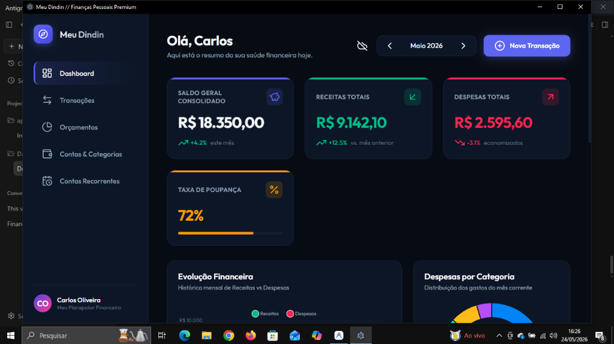
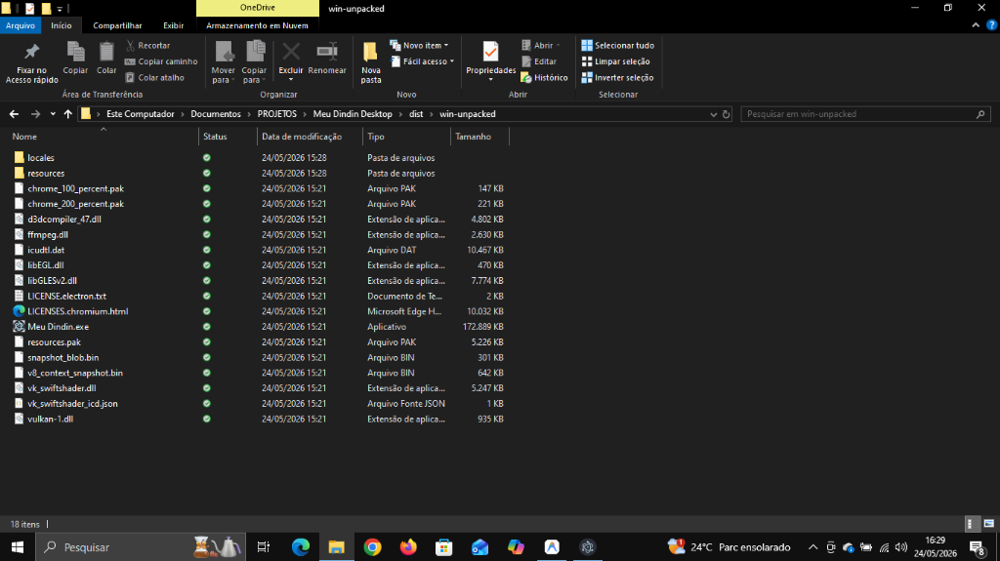

1. Introdução e Filosofia de Uso
O Meu Dindin é um organizador financeiro pessoal de alta performance, desenhado para ajudar você a conquistar o controle absoluto das suas finanças com simplicidade, elegância e segurança.
O grande diferencial do Meu Dindin é sua arquitetura **Local-First (Primeiro Local)**. Isso significa que, por padrão, todos os seus dados ficam salvos de forma protegida e 100% privada dentro do seu próprio computador. Nenhum servidor externo ou empresa tem acesso às suas receitas, despesas e saldos bancários. Você tem autonomia total e o aplicativo funciona perfeitamente mesmo sem internet!
Nota Importante
Sua privacidade é nossa prioridade absoluta. Seus registros financeiros são guardados de forma segura localmente e pertencem exclusivamente a você.
2. Primeiros Passos e o Painel Principal (Dashboard)
2.1 Personalizando seu Perfil
No canto inferior esquerdo da tela, você verá o card de identificação. Ele é interativo: basta clicar em cima do nome para abrir o modal de personalização. Ao digitar seu nome e clicar em salvar:
- A mensagem de boas-vindas no cabeçalho superior mudará automaticamente (ex: "Olá, Usuário").
- O avatar será atualizado com as iniciais do seu nome em tempo real.
- O subtítulo exibirá a identificação do seu assistente financeiro oficial.
2.2 O Painel Principal (Dashboard)
A tela principal funciona como uma central de controle financeiro integrada:
- Filtro de Período: Use a caixa de seleção de meses no topo direito para visualizar os lançamentos e relatórios de um mês específico.
- Saldos Rápidos: Acompanhe o Saldo Total (soma de todas as contas), Receitas (entradas do mês selecionado) e Despesas (saídas do mês selecionado) em cards flutuantes.
- Evolução Mensal (Gráfico de Linha): Acompanhe visualmente se as suas despesas estão abaixo de suas receitas nos últimos 6 meses com curvas dinâmicas.
- Distribuição de Despesas (Gráfico de Rosca): Veja proporcionalmente quais categorias estão consumindo mais o seu dinheiro no mês selecionado.
2.3 Criando e Gerenciando Contas
Na aba **Contas**, você pode cadastrar todos os locais onde guarda seu dinheiro (contas correntes, investimentos, carteira física, poupanças):
- Clique em "Nova Conta", defina o nome (ex: "Nubank"), selecione o tipo e digite o saldo inicial.
- Ao lançar novas receitas ou despesas nas contas, os saldos finais são recalculados na mesma hora!
3. Controlando Gastos e Realizando Sonhos
Na aba **Orçamentos & Metas**, você dispõe de duas ferramentas poderosas para manter a sua saúde financeira em dia:
3.1 Orçamentos de Despesas (Limites de Consumo)
Defina um limite de gastos mensais para categorias específicas (como Alimentação ou Lazer). O Meu Dindin guiará você com alertas visuais práticos através de barras coloridas:
| Porcentagem do Limite Gasto |
Cor da Barra |
Significado |
| Abaixo de 80% gasto |
Verde |
Seu consumo nesta categoria está saudável e sob controle. |
| De 80% a 100% gasto |
Amarelo |
Atenção! Você está muito perto de atingir o limite estipulado. |
| Mais de 100% gasto |
Vermelho |
Limite estourado. Um alerta visual é exibido no topo do painel. |
3.2 Metas de Poupança (Savings Goals)
Planeje e Acompanhe de forma dinâmica a acumulação de dinheiro para os seus sonhos (como uma viagem de férias ou a reserva de emergência):
- Crie um objetivo informando o valor total desejado e a data limite de conclusão.
- O Meu Dindin calcula automaticamente a **cota mensal recomendada** para você poupar.
- Use os botões de **(+) Poupado** e **(-) Retirar** direto no card da meta para lançar os aportes e resgates que fizer. A barra de porcentagem sobe na hora, e a parcela mensal recomendada diminui de acordo com o progresso!
4. Automação e Sincronização Inteligente
4.1 Contas e Despesas Recorrentes
Evite esquecer de lançar compromissos fixos mensais (como aluguel, plano de saúde ou mensalidades de serviços digitais):
- Cadastre a conta fixa na aba **Recorrências**, informando o valor, o dia de vencimento e a frequência.
- Toda vez que você inicia o Meu Dindin, o aplicativo analisa de forma inteligente se a data de vencimento passou e realiza o lançamento automático da despesa na conta informada. Praticidade total!
4.2 Sincronização em Nuvem (Google Sheets)
Caso queira utilizar o aplicativo em mais de um computador ou deseje ter uma cópia de segurança integrada, você pode ativar a sincronização em nuvem que se conecta diretamente com a sua conta pessoal do Google Drive:
-
Abra o modal de Sincronização clicando no ícone de nuvem no canto superior direito.
-
Siga o guia rápido exibido na tela para criar uma planilha no seu Google Drive, colar o código de integração fornecido e gerar uma URL de Web App.
-
Defina uma **Chave de Acesso** (senha personalizada) forte e insira junto com a URL no aplicativo. Essa Chave funciona como um escudo de segurança privada na planilha para impedir acessos não autorizados.
-
Clique em **Salvar e Sincronizar**. O aplicativo preencherá as tabelas automaticamente. Conforme você fizer lançamentos no aplicativo, as atualizações serão transmitidas em segundo plano após 2,5 segundos sem nenhuma complicação.
5. Backups de Segurança
Você pode extrair e restaurar cópias físicas completas de segurança das suas finanças a qualquer momento na aba de configurações:
- Exportar Dados (Backup JSON): Baixa um arquivo de segurança diretamente no seu computador contendo todos os seus registros locais. Guarde este arquivo em local seguro.
- Importar Dados (JSON): Permite selecionar um arquivo de backup baixado anteriormente. O Meu Dindin substituirá instantaneamente a base local pelas informações restauradas, recalculando gráficos e saldos perfeitamente.
6. Tutorial Ilustrado: Como Usar as Principais Funções
Este guia visual ajuda você a dominar rapidamente todas as operações cotidianas do seu Meu Dindin, mostrando exatamente onde clicar com ilustrações diretas do aplicativo.
6.1 O Painel Principal e Tour de Telas
Ao iniciar o aplicativo e cadastrar seu nome no perfil pela primeira vez, o Meu Dindin guiará você com um **Tour Interativo de Holofote (Spotlight Guide)** diretamente na tela. Esse tour destaca visualmente as áreas da barra lateral, cabeçalho de boas-vindas, adição rápida e sincronização.

Figura 1: Painel Geral com gráficos de rosca para categorias e área de evolução de caixa de 6 meses.
6.2 Cadastrando Lançamentos (Despesas e Receitas) e Recorrências
Para lançar uma nova operação financeira (receita ou despesa) ou uma despesa recorrente agendada:
- Clique no botão flutuante no topo direito "+ Nova Transação".
- No formulário que se abre, escolha se é uma Receita (entrada em verde) ou uma Despesa (saída em rosa/vermelho).
- Insira o valor em reais, digite a descrição do lançamento, informe a data correspondente, e vincule a uma **Conta Bancária** e **Categoria** (ex: Alimentação).
- Automação de Recorrências: Caso este pagamento se repita todos os meses (ex: Netflix ou Aluguel), marque a caixa "Lançamento recorrente" para que o sistema registre a cobrança automaticamente a cada novo ciclo de faturamento. Alternativamente, cadastre na aba **Contas Recorrentes** para processamento automático inteligente em segundo plano ao abrir o app!
- Clique em "Salvar Lançamento". Seu saldo de conta será atualizado retroativamente e o gráfico se redesenhará na mesma hora!
6.3 Criando, Editando e Excluindo Contas
Para gerenciar de forma profissional onde seu dinheiro é guardado:
- Criar Contas: Vá na aba **Contas & Categorias** no menu lateral, clique em **"Nova Conta"**, dê um nome descritivo (ex: "Carteira Dinheiro"), defina o tipo (Corrente, Poupança, Crédito ou Dinheiro) e informe o saldo inicial.
- Editar Contas: Clique no botão de edição (lápis) ao lado da conta que deseja ajustar para atualizar o saldo manual ou corrigir o nome.
- Excluir Contas: Clique no ícone de lixeira. Quaisquer lançamentos que dependiam da conta serão preservados para integridade histórica, marcados sem conta vinculada.
6.4 Criando e Excluindo Categorias
Personalizar suas divisões de gastos permite relatórios analíticos perfeitos no gráfico de rosca:
- Criar Nova Categoria: Na aba **Contas & Categorias**, localize a seção "Categorias Financeiras", clique em **"Nova Categoria"**, selecione se ela classifica Receitas ou Despesas, escolha uma cor vibrante exclusiva e um ícone temático descritivo (Lucide Icons).
- Editar Categorias: Ajuste a cor ou renomeie qualquer categoria cadastrada simplesmente clicando no ícone do lápis.
- Excluir Categorias: Clique no botão de lixeira. As transações antigas vinculadas a ela serão rotuladas com a categoria "Outros" para evitar perda de dados históricos.

Figura 2: Aba deslizante interativa de Metas de Poupança com aporte rápido (+) e retirada (-) em tempo real.
6.5 Ativando a Sincronização Segura com Google Sheets
A sincronização integrada permite que seus dados locais sejam transmitidos e guardados de forma segura e encriptada na sua própria planilha do Google:

Figura 3: Modal de controle de nuvem integrado para Chave de Acesso e URL do Web App Google Sheets.
- Abra o modal de nuvem no aplicativo (ícone no topo direito).
- Clique no botão para criar uma Planilha em Branco no seu Google Drive.
- Copie o script fornecido no modal e cole-o na seção "Extensões > Apps Script" da sua planilha Google.
- Clique em "Implantar > Nova Implantação" no Apps Script, selecione "Aplicativo Web", conceda acesso e gere a URL pública de integração.
- Cole a URL gerada e crie uma **Chave de Acesso** (Token de Segurança) forte no aplicativo. Salve as alterações e clique em **"Salvar e Sincronizar"**. Os dados locais serão enviados e a planilha será montada perfeitamente na hora, dividida em abas coloridas e formatadas!